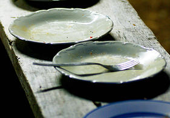
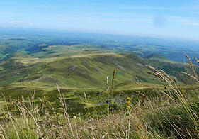
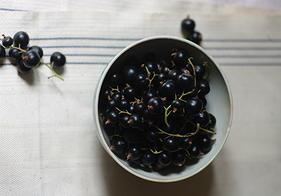

| foowd | servizi | international | su di noi | partecipa |
| partecipa |
| etica |
| team |
| altro |
foowd - what we do
foowd is a fair marketplace where producers can directly sell their own products, and a logistics integrated solutions to grant efficiency and sustainability. foowd applies a win-win strategy that reconnects and aggregates offer and demand on the same platform, merging producers and consumers needs: this is possibile thanks to innovative social engineered solutions that we called: "crowd-sourcing of distribution". This is a disrupting way to decrease logistics cost without charging on the final price. Also, interaction among customers is lived as an exciting and new experience, generating an conspicuous value throught the supply chain.
Our revenue model consists in a subscription paid by sellers to have access to the aggregated demand and online visibility, to allow best and more performative producers to use at best their advantage. No fees are applied on the final price and there are no costs to place insertions. We offer to consumers a free service. Differently than traditional online marketplaces like Ebay, our revenue model makes the practice of free riding harmless, because we do not have any share of selling price. foowd also provides to consumers a browser integration that allows our brand new purchasing experience on any other site. We use tools of web 2.0 to make the social sharing a disrupting way to buy things.
For any issues, question, investment opportunity and anything else write to us on info@foowd.it |
||

Need
Market desires quality products at a fair price. There’s a lack of distribution of quality food, and an asymmetry between huge demand of such goods and the limited offer that follows. foowd aims to solve the main problems of the market pursuing social cooperation and a win-win strategy for all parts involved, from farmers to final consumers. Market
Domestic market for foowd shows very interesting data: the whole number of farmers in Italy is around 1,5 mln, while producers under 40 years old are 9,9% and middle-aged farmers, (between 40 and 55) are 28,1%. These two classes count, respectively, 152.367 and 433.468 tenant farmers. Our information-centric business model will guarantee exceptional revenue with a little penetration (4% and 1% respectevely) in target and domestic market, while our general strategy and know-how will be very easy to apply towards foreign consumer market. |

Team
The Team masters the skills to achieve the goal. The four primary control task are fully covered: Product, Administration, Marketing, Development.
|

Execution
foowd is a startup with solid bases and contact already started with agricultural association in Italy. The actual stage is a studio-sized company, the final solution and the scale-up should come in about ten months. Our first closed beta platform is already available in Italian, and we are completing the fine tuning for user experience, behavioural marketing and investor relationship. A solid marketing strategy and the opportunity offered by Expo 2015, focused on agriculture, will allow growth of the company before end of the third year.
Return of investment
foowd has still some available position for investor: it requires a limited amount of initial investment to reach break-even in the second year of operation, allowing a very fast exiting strategy from investment in the 3° year with around 300% net profit. The break-even requires only about 1.000 paying users and will be touched during the second year. |
contatti
|
seguici

|
produttori |
investor areaYou are here to find out investment opportunities in foowd company |
disclaimer© 2014 by foowd srl | Viale Forlanini 23 20134 - Milano foowdsrl@pec.it | P.I/C.F. 08666400968 | Cap. sociale 10.000€ | R.E.A. di Milano - 2041086 |